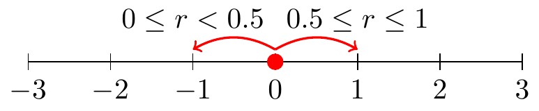
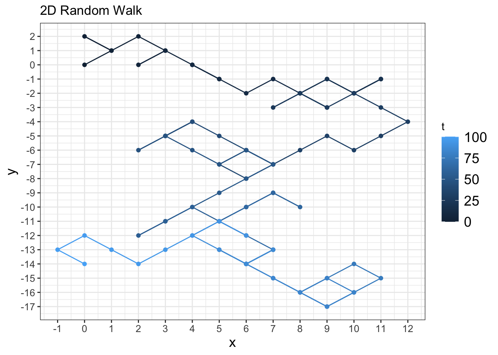
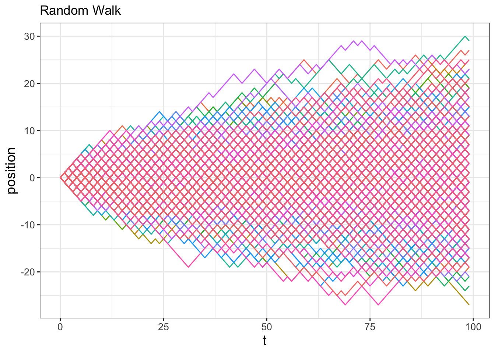
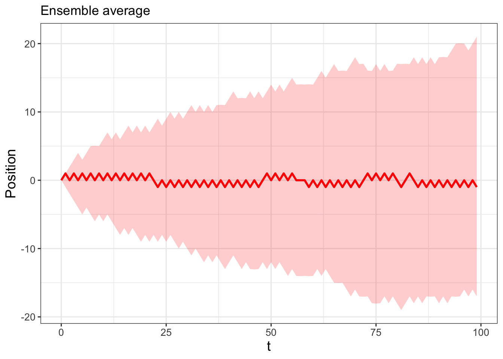

23 Random Walks
Chapters 21 and 22 introduced the concept of stochastic dynamical systems and ways to compute ensemble averages. In this chapter we will begin to develop some tools to understand stochastic differential equations by studying the concept of random walks. While exploring random walks may seem like a diversion from understanding stochastic differential equations, there are deep connections between the two topics. We will do some interesting computational exercises that may lead to some non-intuitive results. Curious? Let’s get started!
Note
This chapter uses following libraries: ggplot2, dplyr, purrr, tibble (all part of the tidyverse) and demodelr. Prior to running any code in this section, include library(tidyverse) and library(demodelr).
23.1 Random walk on a number line
The conceptual idea of a random walk begins on a number line. Let’s begin at the origin (so at \(t=0\) then \(x=0\)). Based on this number line we can only move to the left or the right, with equal probability. At a given time we decide to move in a direction based on a random number \(r\) drawn between 0 and 1 (in R we do this with the command runif(1)). Figure 23.1 conceptually illustrates this random walk.
For each iteration of this process we will draw a random number using runif(1). We can code this process using a for loop. Try the following code out on your own:
# Number of steps our random walk takes
number_steps <- 100
# Set up vector of results
position <- array(0, dim = number_steps)
for (i in 2:number_steps) {
if (runif(1) < 0.5) {
position[i] <- position[i - 1] - 1
} # Move right
else {
position[i] <- position[i - 1] + 1
} # Move left
}
# Let's take a peek at our result:
plot(position, type = "l")
print(mean(position)) # Average position over the time interval
print(sd(position)) # Standard deviation over the time intervalLet’s remind ourselves what this code does:
number_steps <- 100: The number of times we draw a random number, referred to steps.position <- array(0,dim=number_steps): We are going to pre-allocate a vector (array) of our results, calledposition. (We call thispositioninstead ofxto avoid confusion when plotting results.) Values in this array are all set at 0 for convenience.- The for loop starts at the second step and then either adds or subtracts one from the prevoius position
position[i-1]and updates the result toposition[i]. plot(position,type='l')makes a simple line plot of the results.
Now that you have run this code, try running it again. Do you get the same result? I hope you didn’t - because this process is random! It is interesting to run it several times because there can be a wide variance in our results - for some realizations of the sample path, we end up being strictly positive, other times we go negative, and other times we just hover around the middle line (\(\texttt{position}=0\)) in the plot.
23.1.1 Alternative approach with base R functions
In defining our random walk we used a for loop. We can also use some of the built-in functions for R to write this more succinctly:
# Number of steps our random walk takes
number_steps <- 100
jump_size <- c(-1, 1)
jump_prob <- c(0.5, 0.5)
# Generate all the step changes (1 or -1)
steps <- sample(jump_size, number_steps, prob = jump_prob, replace = TRUE)
# include the starting 0
steps <- c(0, steps)
# Determine the position after all the different steps
position <- cumsum(steps)
# Let's take a peek at our result:
plot(position, type = "l")
print(mean(position)) # Average position over the time interval
print(sd(position)) # Standard deviation over the time intervalThe function sample randomly chooses from the vector jump_size for the number of steps (number_steps) times with probability 0.5 for both, encoded as jump_prob. The option replace=TRUE means sampling with replacement - if this is not set, we would only be able to run this twice because there are two options to sample from (-1 or 1). The last function cumsum computes a cumulative sum of values from a vector, which we can eventually use to plot the random walk as it progresses. Exercise 23.3 will have you explore the differences between cumsum and sum.
While for loops are instructive, using the sample function might be preferred as the sample function is better optimized to run quickly.
23.1.2 Random walks in two dimensions
Now that we have developed code for a random walk on a number line, we can extend the idea to a random walk on a plane. In this case we are assuming that it is possible to jump the the left/right and up/down with equal probability. Some sample code follows:
# Number of steps our random walk takes
number_steps <- 100
jump_size <- c(-1, 1)
jump_prob <- c(0.5, 0.5)
# Generate all the step changes (1 or -1)
steps_x <- sample(jump_size, number_steps, prob = jump_prob, replace = TRUE)
steps_y <- sample(jump_size, number_steps, prob = jump_prob, replace = TRUE)
# include the starting 0
steps_x <- c(0, steps_x)
steps_y <- c(0, steps_y)
# Determine the position after all the different steps
position_x <- cumsum(steps_x)
position_y <- cumsum(steps_y)
random_walk_2d <- tibble(t = 0:number_steps,position_x,position_y)
# Plot these all together
ggplot(data = random_walk_2d , aes(x = position_x, y = position_y,order=t,color=t)) +
geom_path() +
geom_point() +
ggtitle("2D Random Walk") +
labs(x="x",y="y")
Figure 23.2 shows how the position evolves over time (using the color gradient).
23.2 Iteration and ensemble averages
We can apply the workflow (Do once \(\rightarrow\) Do several times \(\rightarrow\) Summarize \(\rightarrow\) Visualize) from Chapter 22 on this random walk process to investigate what happens when we run additional simulations and compute the ensemble average. Let’s apply this workflow:
For the “Do once” step, we will define a function called random_walk that has the number of steps as an input:
random_walk <- function(number_steps) {
# Set up vector of results
position <- array(0, dim = number_steps)
for (i in 2:number_steps) {
if (runif(1) < 0.5) {
position[i] <- position[i - 1] - 1
} # Move right
else {
position[i] <- position[i - 1] + 1
} # Move left
}
out_position <- tibble(t = 0:(number_steps - 1), position)
return(out_position)
}Next to “Do several times” we will run this random walk function for 100 steps and 500 simulations and display the spaghetti plot in Figure 23.3:
number_steps <- 100 # Then number of steps in random walk
n_sims <- 500 # The number of simulations
map(1:n_sims, ~ random_walk(number_steps)) |>
# Compute solutions
random_walk_sim <- map(
1:n_sims,
~ random_walk(number_steps)
) |>
set_names(paste0("sim", 1:n_sims)) |>
map_dfr(~.x, .id = "simulation")
# Plot these all together
ggplot(data = random_walk_sim, aes(x = t, y = position)) +
geom_line(aes(color = simulation)) +
ggtitle("Random Walk") +
guides(color = "none")
For the “Summarize” and “Visualize” steps we will compute the 95% confidence interval, structuring the code similar to Figure 22.5 from Chapter 22. Try writing this code out on your own, but the results are shown in Figure 23.4.

Two interesting things are occurring in Figures 23.3 and 23.4. First, Figure 23.4 suggests that on average you go nowhere (in other words, the average position is \(\texttt{position}=0\)), but as the number of steps increases, you are very likely to be somewhere (in other words, the confidence interval increases as the number of steps increases). Second, the 95% confidence interval appears to be a square root function \(y=a\sqrt{t}\). One way that we could confirm this is by running more realizations and investigating the ensemble average (Exercise 23.6).
23.3 Random walk mathematics
Another way to corroborate our observations in Figures 23.3 and 23.4 is with mathematics. First we define some terminology and notation. Call \(x^{n}\) the position \(x\) at step \(n\) in a random walk that increments with step size \(\Delta x\) (Equation 23.1):
\[ x^{n}=x^{n-1}+r_{s} \; \Delta x = \sum_{s=1}^{n} \Delta x \; r_{s}, \tag{23.1}\]
with \(\Delta x\) being the jump size (in our example above \(\Delta x=1\)), and \(s\) the particular step in our random walk. We denote \(r_{s}\) as a random variable that takes the value of \(-1\) or \(1\). Another way to write \(r_{s}\) is with Equation 23.2:
\[ r_{s}=\begin{cases} -1 & p(-1)=0.5 \\ 1 & p(1)=0.5 \end{cases} \tag{23.2}\]
The way to interpret Equation 23.1 is that the variable \(r_{s}\) equals \(-1\) (\(r_{s}=-1\)) with probability 0.5 (\(p(-1)=0.5\)). We can write Equation 23.1 as a single summation because the position depends on the different values of \(-1\) or 1 generated at each step, only as long as we keep track of the sequence of \(-1\) or 1 for each step \(s\).
When we run multiple simulations we will use the notation \(x_{j}^{n}\), which is the position at step \(n\) for simulation \(j\).
Let’s introduce some terminology to help us out here. The quantity \(\displaystyle \big \langle X \big \rangle = \sum_{i=1}^{n} p(X) \cdot X\) is the expected value for a discrete random variable. What we do is weight the value of each possibility by its probability. For the random variable \(r_{s}\) we have:
\[ \big \langle r_{s} \big \rangle = (1) \cdot 0.5 + (- 1) \cdot 0.5 = 0 \]
Nice! The expected value is a linear operator1.
The next step is to determine the expected value of \(x^{n}\). Here we have \(J\) different simulations; this will be computed as \(\displaystyle \big \langle x^{n} \big \rangle = \frac{1}{J} \sum_{j=1}^{J} p(x_{j}^{n}) \cdot x_{j}^{n}\). We can further compute the expected value using Equation 23.1:
\[ \big \langle x^{n} \big \rangle = \big \langle \sum_{j=1}^{J} \left( \Delta x \; r_{s} \right) \big \rangle = \sum_{j=1}^{J} \left( \big \langle \Delta x \; r_{s} \big \rangle \right) = \sum_{j=1}^{J} \Delta x \cdot \big \langle \; r_{s} \big \rangle = 0 \]
Imagine that! All of this mathematics leads to the conclusion that the expected value of \(x^{n}\) is zero! In other words, on average a random walk goes nowhere!
23.3.1 Random walk variance
Now that we have characterized the expected value we will determine the variance2 of \(x^{n}\), or \(\langle (x^{n})^{2} \rangle\). This is still a lot of work with summations, but it is worth it! First, multiply out the square of Equation 23.1 using properties of summation:
\[ (x^{n})^{2} = \left( \sum_{s=1}^{n} \left( \Delta x \; r_{s} \right) \right)^{2} = \left( \Delta x \right)^{2} \sum_{s=1}^{n} \sum_{t=1}^{n} (r_{s} \cdot r_{t} ) \]
Now when we compute the expected value for \(\displaystyle \big \langle (x^{n})^{2} \big \rangle\) we need to consider the double summation - so this means there are two different indices \(s\) and \(t\). However because of summation properties we have:
\[ \big \langle (x^{n})^{2} \big \rangle = \left( \Delta x \right)^{2} \sum_{s=1}^{n} \sum_{t=1}^{n} \big \langle r_{s} \cdot r_{t} \big \rangle \]
So really we need to consider the term \(\displaystyle \big \langle r_{s} \cdot r_{t} \big \rangle\). While that may seem scary, let’s break it down into two cases: when \(t=s\) and \(t \neq s\):
- Case \(t \neq s\): Here we need to multiply together all the possible combinations for the random variable \(r_{s} \cdot r_{t}\). There are four possibilities: \(r_{s} \cdot r_{t}=(-1) \cdot (1)\), \(r_{s} \cdot r_{t}=(-1) \cdot (-1)\), \(r_{s} \cdot r_{t}=(1) \cdot (1)\), \(r_{s} \cdot r_{t}=(1) \cdot (-1)\). When we multiply these results and consider the different probabilities associated with them we get the following random variable for \(r_{s} \cdot r_{t}\):
\[ r_{s} \cdot r_{t} =\begin{cases} -1 & p(-1)=0.5 \\ 1 & p(1)=0.5 \end{cases} \tag{23.3}\]
Then the expected value is the following:
\[ \big \langle r_{s} \cdot r_{t} \big \rangle = (1) \cdot 0.5 + (-1) \cdot 0.5 = 0 \]
- Case \(t = s\): This case is a little easier. In both instances (when \(r_{t}=1\) or \(r_{t}=-1\)) the variable \(r_{t} \cdot r_{t}\) equals 1, so the expected value \(\displaystyle \big \langle r_{s} \cdot r_{t} \big \rangle\) is simply 1! So as a result:
\[ \begin{split} \big \langle (x^{n})^{2} \big \rangle &= \left( \Delta x \right)^{2} \sum_{s=1}^{n} \big \langle r_{s}^{2} \big \rangle \\ & = \left( \Delta x \right)^{2} \sum_{s=1}^{n} 1\\ &= n \left( \Delta x \right)^{2} \end{split} \tag{23.4}\]
Equation 23.4 tells us that the variance, or the mean square displacement, is proportional to \(n\). Another way to state this is that the standard deviation (the square root of the variance) is equal to \(\pm \sqrt{n} \; \Delta x\), where \(n\) is the current step. This matches up with our graphs from earlier since \(\Delta x =1\)! Informally, the variance tells us that on average you go nowhere, but eventually you travel everywhere - how cool!
23.4 Continuous random walks and diffusion
On a final note, we can extend the discrete random walk to continuous time. This process is perhaps similar to how you may have seen that the Riemann sum to (discretely) approximate the area underneath a curve and the horizontal axis becomes a definite integral.
Define the variable \(t\) such that \(t= n \Delta t\). Equivalently \(\displaystyle n = \frac{t}{\Delta t}\). With this information we can use Equation 23.4 to do the following:
\[ \big \langle (x^{n})^{2} \big \rangle = \frac{t}{\Delta t} ( \Delta x)^{2}. \tag{23.5}\]
The quantity \(\displaystyle D = \frac{( \Delta x)^{2}}{2 \Delta t}\) is known as the diffusion coefficent. So then the mean square displacement can be arranged as \(\langle (x^{n})^{2} \rangle = 2Dt\), confirming again that the variance grows proportional to \(t\).
To connect this back to our discussion of stochastic differential equations, understanding random walks helps us to understand how demographic and environmental stochasticity may affect a differential equation. An excellent, highly readable book on random walks in biology is Berg (1993). Since there is a randomness to solution trajectories, we will repeatedly use ensemble averages (developed in Chapter 22) to understand the expected behaviors of a stochastic differential equation. The next chapters will apply the workflows studied here to investigate the connections between random walks and stochastic differential equations.
23.5 Exercises
Exercise 23.1 Rerun the code from Section 23.1.1 that implements the random walk that uses the function sample with the option replace = FALSE. You should receive an error. Explain the error in your own words.
Exercise 23.2 Rewrite the function random_walk defined in Section 23.2 using the sample function defined in Section 23.1.1. You may have to adjust the vector t when defining the output tibble.
Exercise 23.3 Consider the vector test_vec <- c(1,2,-2,6,-3,5). Explain the differences between sum(test_vec) and cumsum(test_vec).
Exercise 23.4 When doing the random walk mathematics, we made the claim that \(\displaystyle x^{n} = \sum_{s=1}^n \Delta x \, r_{s}\), where \(r_{s}\) takes on the value of \(-1\) or \(1\). Set \(\Delta x = 1\) and do a random walk for 5 steps, keeping track whether the value of \(r\) is \(-1\) or \(1\) at each step. Does the final position equal the sum of all the values of \(-1\) or \(1\)?
Exercise 23.5 Let \(r_{s}\) be the random variable defined by Equation 23.2.
- Multiply out the following summation: \(\displaystyle \sum_{s=1}^{2} \sum_{t=1}^{2} (r_{s} r_{t} )\).
- Use the previous result to compute the expected value \(\displaystyle \big \langle \sum_{s=1}^{2} \sum_{t=1}^{2} r_{s} \cdot r_{t} \big \rangle\)
Exercise 23.6 Re-run the code used to generate Figure 23.4, but where the number of realizations is set to 1000 and 5000 (this may take some time to compute). Do your results conform to the observation that the expected position is zero, but the uncertainty grows as the number of steps increases? Can you determine the value of \(a\) such that \(y=a\cdot\sqrt{n}\) that parameterizes the 95% confidence interval as a function of \(n\)?
Exercise 23.7 Use the fact that the diffusion coefficient is equal to \(\displaystyle D = \frac{ (\Delta x)^{2}}{2\Delta t}\) to answer the following questions.
- Solve \(\displaystyle D = \frac{ (\Delta x)^{2}}{2\Delta t}\) to isolate \(\Delta t\) on one side of the expression.
- The diffusion coefficient for oxygen in water is approximately \(10^{-5}\) cm\(^{2}\) sec\(^{-1}\). Use that value to complete the following table:
| Distance (\(\Delta x\)) | 1 \(\mu\)m = 10\(^{-6}\) m | 10 \(\mu\)m | 1 mm | 1 cm | 1 m |
|---|---|---|---|---|---|
| Diffusion time (\(\Delta t\)) |
Report the diffusion time in an appropriate unit (seconds, minutes, hours, years) accordingly.
- Navigate to the following website, which lists sizes of different cells. For what cells would diffusion be a reasonable process to transport materials?
Exercise 23.8 Consider Equation 23.5. Evaluate separately the effect of \(\Delta x\) and \(\Delta t\) on the variance. How would you characterize the variance if either of them independently is small or large?
Exercise 23.9 Compute \(\langle r \rangle\) for the following random variable:
\[ r=\begin{cases} -1 & p(-1)=0.52 \\ 1 & p(1)=0.48 \end{cases} \]
Exercise 23.10 Compute \(\langle r \rangle\) for the following random variable:
\[ r=\begin{cases} -1 & p(-1)=q \\ 1 & p(1)=(1-q) \end{cases} \]
Exercise 23.11 Consider the following random variable:
\[ r_{q}= \begin{cases} -1 & p(-1) = 1/3 \\ 0 & p(0)= 1/3\\ 1 & p(1)=1/3 \end{cases} \]
- Modify the code for the one-dimensional random walk to generate a simulation of this random walk and plot your result. You can do this by applying an
ifelsestatement as shown in the code chunk below. - Compute \(\displaystyle \langle r_{q} \rangle\) and \(\displaystyle \langle r_{q}^{2} \rangle\).
- Based on your last answer, explain how this random variable introduces a different random walk than the one described in this chapter. In what ways would this random walk change the calculations for the mean and variance of the ensemble simulations?
# Code for random variable r_q:
p <- runif(1)
if (p < 1 / 3) {
x[i] <- x[i - 1] - 1
} else if (1 / 3 <= p & p < 2 / 3) {
x[i] <- x[i - 1]
} else {
x[i] <- x[i - 1] + 1
}Exercise 23.12 In this exercise you will write code and simulate a two-dimensional random walk. In a given step you can either move (1) left, (2) right, (3) up, or (4) down. (You cannot move up and left for example). The random walk starts at \((x,y)=(0,0)\). With \(\Delta x = 1\), the random walk at step \(n\) can be described by \(\displaystyle (x,y)^{n} = \sum_{s=1}^{n} r_{d}\), where \(r_{d}\) is one of the four motions, represented as a coordinate pair. (A movement up is \(r_{d}=(0,1)\) for example.)
- Define a variable \(r_{d}\) that models the motion from step to step.
- Modify the code for the one-dimensional random walk to incorporate this two-dimensional random walk. One way to do this is to create a variable \(y\) structured similar to \(x\), and to have multiple
ifstatements in theforloop that movesy. - Plot a few different realizations of your sample paths.
- If we were to compute the mean and variance of the ensemble simulations, what do you think they would be?
Berg, Howard. 1993. Random Walks in Biology. Princeton, New Jersey: Princeton University Press.
This means that for random variables \(X\) and \(Y\) with constants \(a\) and \(b\): \(\displaystyle \big \langle aX+bY \big \rangle = a \cdot \big \langle X \big \rangle + b \cdot \big \langle Y \big \rangle\).↩︎
The definition of the variance of a random variable \(X\) is \(\big \langle (X-\mu)^{2} \big \rangle\), where \(\mu\) is the expected value. For our case \(\mu\) equals 0.↩︎